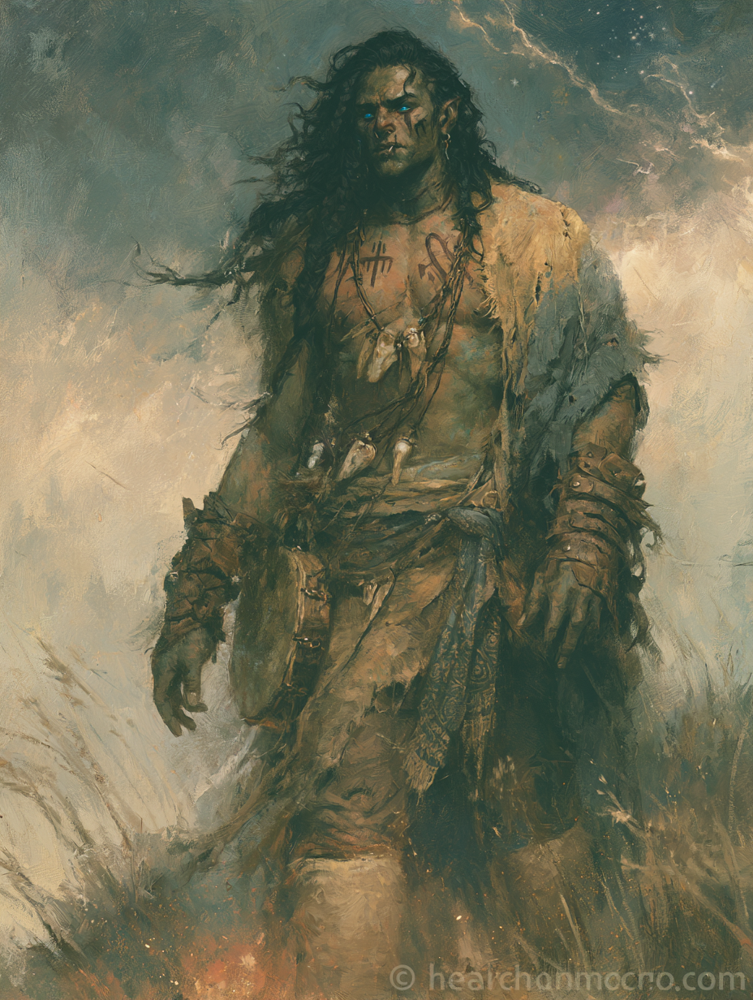

| Saving Throws | ||
| ◆ | Strength | +5 |
| ◆ | Dexterity | +8 |
| ◆ | Constitution | +3 |
| ○ | Intelligence | +0 |
| ◆ | Wisdom | +6 |
| ◆ | Charisma | +6 |
| Skills | |||
| ◆ | Acrobatics | Dex | +8 |
| ○ | Animal Handling | Wis | +2 |
| ○ | Arcana | Int | +0 |
| ◆ | Athletics | Str | +5 |
| ○ | Insight | Wis | +2 |
| ○ | Nature | Int | +0 |
| ○ | Perception | Wis | +2 |
| ○ | Religion | Int | +0 |
| ◆ | Survival | Wis | +6 |
Proficiencies: simple weapons, shortswords, light/medium/heavy armor & shields (cleric), hand drum. Spell save DC and attack mod are identical for cleric (Wis) and sorcerer (Cha) at +6 / DC 14.
Skretting’s working repertoire — the spells he reaches for, the ones that feel like prayer in his hands. His Cleric and Sorcerer lists hold others he can also prepare or call, but these eleven are the practice itself: the body, the weather, the road, the saving touch.
Additional cleric and sorcerer spells are available on the broader lists — these eleven are the marked, named ones; the rest remain unmarked, called only when the moment asks.
Attuned · Equipped
Boots of Flexibility: the boots tingle as they fit perfectly to your feet. Soft woolen, calf-high, almost thick socks.
Sash of Relentless Chi: any time he crits with an unarmed strike, he regains 1 ki point.
Carried
Coin
Skretting was born in a modest-sized town inland, deep in the Duchy of Risent — the old orcish heartland, conquered by Greycott a thousand years past, where most of the people remain orc, half-orc, goblin, and where the kingdom’s grip is more nominal than real. His father is fully human and devoutly Bahann-faithful. His mother, half-orc, converted at her marriage but never truly stopped: in her hands, Bahann was Siadon, re-skinned, re-named, the same god by another voice.
That is the secret a great many in Risent hold. When the human invaders came, Siadon — Chaotic god of the depths, sea and Underdark and starlit sky — was understood to have retreated, not abandoned. A strategic withdrawal into the deep, awaiting the day of return. Some orcs have moved fully onto the oceans to be with him, and to outlive the coming tsunami-judgment. Some kneel and pray to Athur the Just and call it peace. Most who stayed have learned to wear the new gods’ names over the old ones, like a hood pulled up against the wrong weather.
Far from the coast, the sea aspects of Siadon mattered less to Skretting’s mother than the storm and sky. The weather was Bahann the trickster. The stars were his arcana, his art. She taught her son to read both — to orient himself by what was above him, and to know what was coming by the smell of the wind. He has never lost the habit.
He was set, for a time, toward the temple-priesthood of Bahann the Ecstatic. The temple rejected him: in part because of the folk-syncretism he had grown up steeped in, and in part because his understanding of Bahann was, in his own words, too large for the ossified practices of the priesthood. Bahann was not a thing you locked in stone, he insisted. The god was boundless. The forms must keep changing.
He took a leave of absence under the cover of a pilgrimage. That pilgrimage has not ended.
Out on the road, he leaned hard into reconciling the folk practices of his mother’s line with the religious training of his father’s — a synthesis that is recognizably neither Bahann-orthodoxy nor Siadon-orthodoxy, and would scandalize both. It led him into the Way of the Four Elements: the body as the site where the divine is met, where weather and breath and water and stone are the same teacher in different rooms.
The culmination came in a vision-quest beneath a powerful lightning storm. Bahann answered. The lightning spoke. Skretting walked out of it forever changed, and changed in a particular way: something of the storm stayed in him. He has been a Storm Sorcerer ever since, the magic innate, weather-shaped, no spellbook required.
He travels now as a guide. He attaches himself to bands of pilgrims, traders, scholars, fools — particularly those on journeys of discovery, particularly those who would otherwise die in the wilderness without him. He has a healthy and quite practical suspicion of mages, and he uses what he knows of magic to interrupt the overeager. The hand that knows the spell knows where to break it.
He has, in passing, crossed paths with Cardinal Renault — the one widely held to be Bahann’s chosen, then a boy of fourteen, now perhaps eighteen. The Cardinal’s counsel, as Skretting remembers it, was simple: do not let any single vision become the only vision. Skretting has tried to honor that.